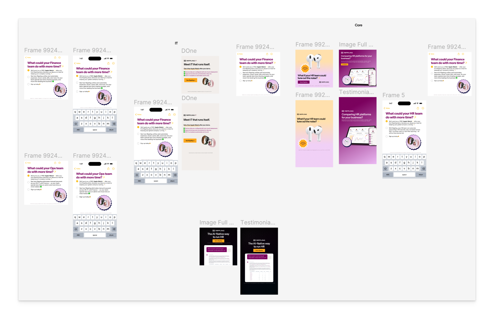
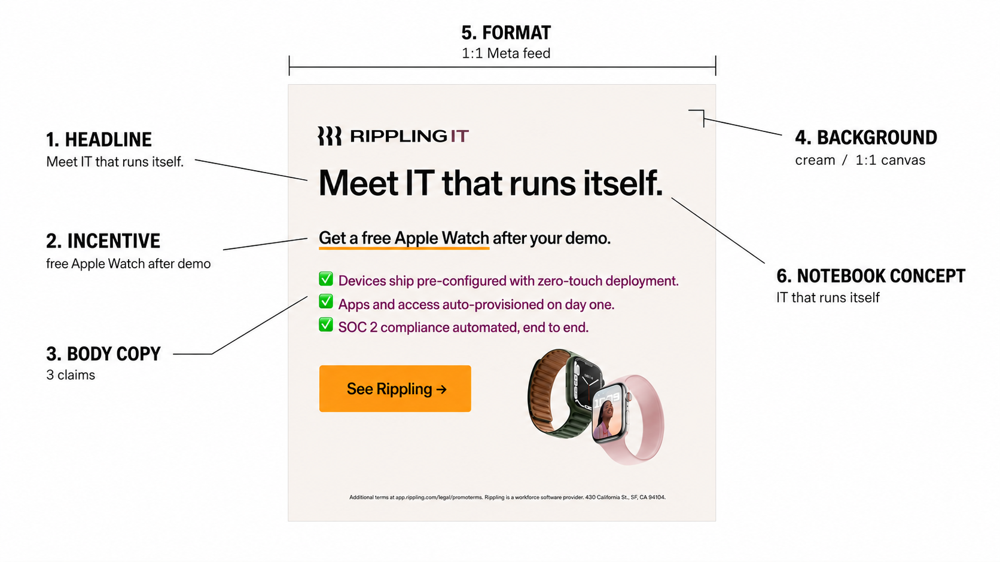
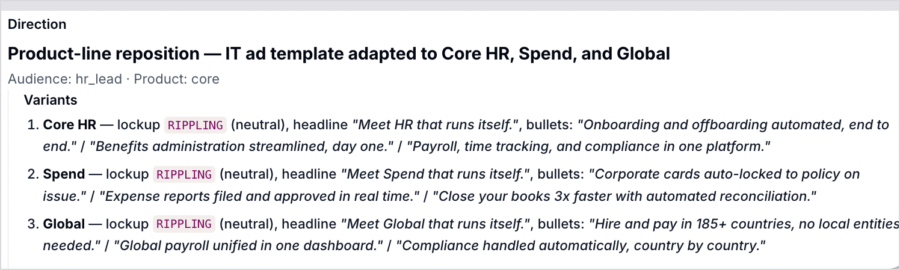
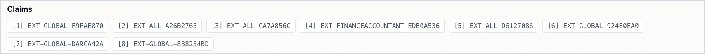
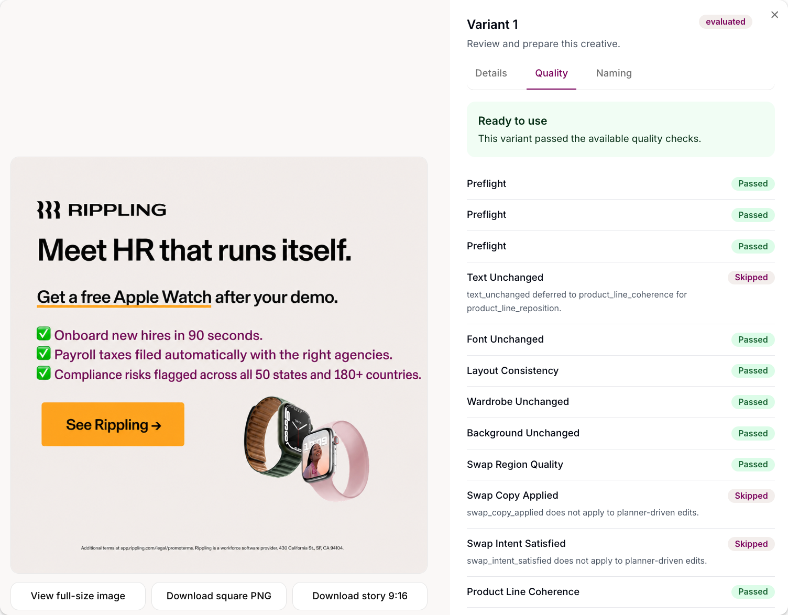

Will Hunter · GTM Engineering
Rippling Paid Social Agent
An idea in, multiple brand-safe creatives out.
1Paid Social Agent
Creative was capping campaign velocity.
Sat with the domain experts on Meta and LinkedIn. Creative creation kept coming up as the constraint on campaign velocity.

Brand built a template. Paid social hand-edited every variant: new copy, new image, new incentive, repeat.
8–12 hrs / week
An experiment won? They rebuilt it by hand for every other Rippling product.
Paid Social Agent
Before the agent: taking every ad apart.
The team already looked at performance. The work was manual, one experiment at a time, so the non-obvious patterns stayed hidden.

Every element gets scored on its own, across every ad we've run.
Built the data layer before any agent work.
An agent is only as good as how easily it can find out what's true. The agent queries something simple. It never has to go exploring.
Paid Social Agent
Stop asking “did this ad win?”
Ask what's true across everything we've run.
A lot of concepts we rated highly were being carried by the incentive.
Strip the incentive and the concept wasn't doing much on its own. A few held up unaided, and those are the ones we should keep experimenting with.
Not a criticism of anyone's judgement. It's a pattern that only shows up at that zoom level, and no single experiment would ever have surfaced it.
Paid Social Agent
Separate the plan from the pixels.
“This ad format did very well for our IT product. Can you create a version of it for core HR, spend, and our global product?”
That plus the ad itself is the entire input. A strategy problem and a rendering problem aren't the same problem.
What's changing, what's held constant
Checked for reasoning, approved claims, and real evidence.
Human
approves
Execute the approved plan
Checked for fidelity to that plan, not whether the art is good.

Paid Social Agent
Guardrails on the plan.
Before a pixel is rendered.

The check corrects rather than blocks.
The model drafts “save 95% of your workload” when the real number is 90. It doesn't kill the run. It points the planner at the right number and carries on.
One experiment at a time
Only one thing varies.
Product-line completeness
Every leftover from the source product is replaced, neutralized, or kept on purpose.
Source grounding
Base assets exist. Doesn't invent copy, badges, or audience signals.
Paid Social Agent
Three methods that didn't work.
The failures are what pointed at the answer.
Pure generation
The model reinvents the ad every time. Same prompt, wildly different results, nothing holding still between variants. You can't hand that to a brand team.
Deterministic image creation and editing
Total control, and consistently sloppy output. It looked assembled rather than designed.
Driving Figma through its API
Only part of what we needed was exposed, and what was exposed hit rate limits and ran too slowly for the volume we wanted.
Paid Social Agent
Editing beat generating.
Hand it the existing ad and a clearly defined prompt about what we're switching. Everything else stays identical.
Photoshop at scale.
Editing means you can trust that only the experiment changes. Layout and the legal footer stay constant.
Paid Social Agent
Is this asset good? Is it brand safe?
Did we execute the approved plan?
Subjective. No fixed reference. Fires constantly on things that are fine.

The plan is a contract. The source ad is a reference. Did the swap happen, and nothing else?
Paid Social Agent
Expanding outside the paid social team.
~30 people in marketing use it. ABM and the vertical teams are using it too.
~50
ads live, still ramping
Hyper-personalized ads for named accounts. Doing this by hand was never feasible.
10Paid Social Agent
What's next.
Image creation is built. Building and trafficking is in progress.
Campaign creation is still manual, and it caps throughput no matter how fast creative gets.
Are the leads real and in-ICP, and do platform numbers match the warehouse?
Move spend on pipeline signal, not a weekly review.